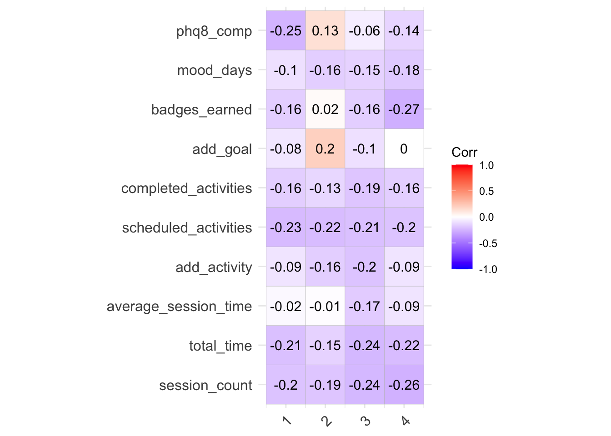

library(tidyverse)
library(ggcorrplot)Eyeball Sample Correlations
Setup
Load libraries
Source functions file
source("fun_moodivate.R")Read in data
d <- read_csv("~/Desktop/dahne_lab/moodivate/data_clean.csv",
show_col_types = FALSE) |>
glimpse()Rows: 342
Columns: 43
$ record_id <dbl> 3, 4, 13, 16, 19, 25, 55, 58, 68, 74, 75, 77, …
$ session_count_w1 <dbl> 26, 1, 5, 1, 13, 10, 2, 36, 4, 15, 11, 18, 12,…
$ session_count_w2 <dbl> 41, 0, 3, 6, 13, 5, 1, 14, 0, 16, 4, 7, 8, 7, …
$ session_count_w3 <dbl> 31, 0, 4, 12, 10, 8, 1, 16, 2, 11, 0, 9, 5, 3,…
$ session_count_w4 <dbl> 23, 0, 1, 9, 18, 5, 0, 15, 0, 10, 0, 4, 0, 3, …
$ total_time_w1 <dbl> 8025, 763, 1388, 364, 2957, 1849, 221, 4456, 8…
$ total_time_w2 <dbl> 7254, 0, 394, 1055, 1628, 328, 58, 929, 0, 121…
$ total_time_w3 <dbl> 2894, 0, 310, 928, 1107, 801, 237, 1496, 158, …
$ total_time_w4 <dbl> 3822, 0, 95, 713, 1793, 552, 0, 1296, 0, 1235,…
$ average_session_time_w1 <dbl> 309, 763, 278, 364, 227, 185, 111, 124, 202, 1…
$ average_session_time_w2 <dbl> 177, 0, 131, 176, 125, 66, 58, 66, 0, 76, 99, …
$ average_session_time_w3 <dbl> 93, 0, 78, 77, 111, 100, 237, 94, 79, 76, 0, 4…
$ average_session_time_w4 <dbl> 166, 0, 95, 79, 100, 110, 0, 86, 0, 124, 0, 52…
$ add_activity_w1 <dbl> 2, 1, 1, 1, 0, 2, 1, 14, 1, 1, 5, 4, 1, 2, 1, …
$ add_activity_w2 <dbl> 4, 0, 0, 0, 0, 0, 0, 1, 0, 0, 0, 0, 0, 0, 0, 2…
$ add_activity_w3 <dbl> 2, 0, 0, 0, 0, 0, 0, 1, 0, 0, 0, 0, 0, 0, 0, 1…
$ add_activity_w4 <dbl> 0, 0, 0, 0, 0, 0, 0, 2, 0, 0, 0, 0, 0, 0, 1, 2…
$ scheduled_activities_w1 <dbl> 165, 1, 3, 18, 7, 26, 7, 70, 1, 87, 21, 48, 10…
$ scheduled_activities_w2 <dbl> 155, 0, 1, 20, 5, 25, 7, 53, 0, 84, 15, 49, 4,…
$ scheduled_activities_w3 <dbl> 152, 0, 2, 17, 3, 25, 7, 59, 0, 82, 0, 48, 5, …
$ scheduled_activities_w4 <dbl> 148, 0, 0, 17, 6, 25, 0, 58, 0, 82, 0, 48, 0, …
$ completed_activities_w1 <dbl> 76, 0, 2, 0, 3, 10, 0, 12, 0, 0, 20, 15, 6, 1,…
$ completed_activities_w2 <dbl> 129, 0, 0, 1, 2, 11, 0, 0, 0, 0, 1, 15, 0, 0, …
$ completed_activities_w3 <dbl> 114, 0, 2, 6, 3, 21, 0, 4, 0, 0, 0, 6, 5, 0, 2…
$ completed_activities_w4 <dbl> 82, 0, 0, 3, 5, 11, 0, 3, 0, 1, 0, 8, 0, 0, 0,…
$ add_goal_w1 <dbl> 6, 1, 2, 1, 2, 3, 1, 6, 1, 1, 2, 5, 7, 3, 4, 1…
$ add_goal_w2 <dbl> 3, 0, 0, 0, 1, 0, 0, 0, 0, 0, 0, 1, 0, 0, 0, 2…
$ add_goal_w3 <dbl> 1, 0, 1, 0, 0, 0, 0, 0, 0, 4, 0, 0, 0, 0, 0, 0…
$ add_goal_w4 <dbl> 0, 0, 0, 0, 1, 0, 0, 3, 0, 0, 0, 0, 0, 0, 1, 3…
$ badges_earned_w1 <dbl> 7, 2, 4, 1, 4, 6, 1, 8, 4, 5, 6, 10, 8, 6, 6, …
$ badges_earned_w2 <dbl> 7, 0, 1, 4, 2, 2, 0, 2, 0, 3, 2, 7, 2, 0, 0, 6…
$ badges_earned_w3 <dbl> 4, 0, 2, 3, 2, 3, 1, 3, 0, 4, 0, 2, 4, 2, 0, 4…
$ badges_earned_w4 <dbl> 4, 0, 0, 4, 2, 4, 0, 3, 0, 4, 0, 1, 0, 2, 4, 5…
$ mood_days_wk1 <dbl> 5, 1, 3, 0, 5, 4, 0, 5, 1, 7, 2, 6, 5, 3, 6, 6…
$ mood_days_wk2 <dbl> 6, 0, 3, 3, 3, 4, 0, 5, 0, 6, 1, 3, 6, 2, 3, 7…
$ mood_days_wk3 <dbl> 6, 0, 2, 2, 3, 4, 1, 6, 1, 7, 0, 3, 3, 2, 2, 7…
$ mood_days_wk4 <dbl> 6, 0, 1, 3, 6, 4, 0, 4, 0, 5, 0, 2, 0, 2, 5, 7…
$ phq8_comp_wk1 <dbl> 1, 0, 1, 0, 1, 1, 0, 1, 1, 1, 1, 1, 1, 1, 1, 1…
$ phq8_comp_wk2 <dbl> 1, 0, 1, 1, 0, 0, 0, 0, 0, 0, 0, 1, 0, 0, 0, 1…
$ phq8_comp_wk3 <dbl> 0, 0, 0, 1, 1, 1, 0, 1, 0, 1, 0, 0, 1, 1, 0, 0…
$ phq8_comp_wk4 <dbl> 1, 0, 0, 1, 0, 1, 0, 0, 0, 0, 0, 1, 0, 1, 1, 1…
$ bdi_baseline <dbl> 28, 23, 46, 27, 46, 42, 37, 46, 21, 38, 51, 60…
$ bdi_outcome <dbl> 1, 0, 1, 0, 1, 1, 1, 0, 0, 1, 0, 1, 1, 1, 0, 0…Select eyeball sample
set.seed(92194)
deye <- d |>
slice_sample(prop = 0.1) |>
select(-record_id) |>
relocate(bdi_outcome) |>
glimpse()Rows: 34
Columns: 42
$ bdi_outcome <dbl> 1, 0, 0, 1, 1, 0, 1, 0, 1, 0, 1, 0, 0, 0, 0, 0…
$ session_count_w1 <dbl> 7, 18, 23, 3, 19, 11, 10, 14, 4, 16, 26, 19, 3…
$ session_count_w2 <dbl> 7, 13, 8, 0, 4, 15, 5, 26, 5, 10, 25, 23, 54, …
$ session_count_w3 <dbl> 7, 11, 2, 1, 1, 12, 8, 17, 3, 11, 14, 26, 67, …
$ session_count_w4 <dbl> 5, 6, 3, 0, 1, 9, 5, 23, 2, 16, 20, 13, 63, 0,…
$ total_time_w1 <dbl> 2501, 5032, 2771, 613, 3926, 2600, 1849, 5362,…
$ total_time_w2 <dbl> 929, 2617, 511, 0, 785, 2698, 328, 4039, 444, …
$ total_time_w3 <dbl> 773, 2086, 141, 70, 52, 1993, 801, 3009, 218, …
$ total_time_w4 <dbl> 1102, 1911, 233, 0, 80, 911, 552, 3318, 239, 7…
$ average_session_time_w1 <dbl> 357, 280, 120, 204, 207, 236, 185, 383, 219, 1…
$ average_session_time_w2 <dbl> 133, 201, 64, 0, 196, 180, 66, 155, 89, 106, 5…
$ average_session_time_w3 <dbl> 110, 190, 71, 70, 52, 166, 100, 177, 73, 68, 5…
$ average_session_time_w4 <dbl> 220, 319, 78, 0, 80, 101, 110, 144, 120, 45, 5…
$ add_activity_w1 <dbl> 1, 1, 8, 1, 8, 2, 2, 12, 1, 1, 2, 1, 2, 2, 8, …
$ add_activity_w2 <dbl> 0, 1, 8, 0, 0, 3, 0, 10, 0, 0, 0, 0, 0, 0, 2, …
$ add_activity_w3 <dbl> 0, 0, 0, 0, 0, 2, 0, 10, 0, 0, 0, 0, 2, 0, 1, …
$ add_activity_w4 <dbl> 0, 0, 0, 0, 0, 0, 0, 11, 0, 0, 0, 0, 4, 0, 2, …
$ scheduled_activities_w1 <dbl> 39, 13, 11, 1, 9, 35, 26, 31, 3, 38, 55, 176, …
$ scheduled_activities_w2 <dbl> 42, 17, 7, 0, 5, 35, 25, 38, 0, 36, 54, 176, 9…
$ scheduled_activities_w3 <dbl> 42, 15, 3, 1, 5, 34, 25, 35, 0, 36, 54, 176, 9…
$ scheduled_activities_w4 <dbl> 41, 13, 3, 0, 5, 34, 25, 23, 0, 36, 54, 176, 8…
$ completed_activities_w1 <dbl> 2, 11, 8, 0, 1, 1, 10, 7, 1, 9, 31, 65, 16, 1,…
$ completed_activities_w2 <dbl> 6, 11, 5, 0, 0, 0, 11, 20, 0, 17, 43, 68, 36, …
$ completed_activities_w3 <dbl> 2, 12, 1, 0, 0, 2, 21, 19, 0, 23, 35, 79, 46, …
$ completed_activities_w4 <dbl> 5, 9, 1, 0, 0, 3, 11, 12, 0, 17, 32, 61, 56, 0…
$ add_goal_w1 <dbl> 3, 2, 4, 1, 6, 2, 3, 6, 1, 2, 1, 8, 5, 2, 14, …
$ add_goal_w2 <dbl> 0, 0, 0, 0, 1, 1, 0, 0, 0, 1, 0, 0, 2, 0, 2, 0…
$ add_goal_w3 <dbl> 0, 0, 0, 0, 0, 0, 0, 0, 0, 0, 0, 0, 1, 0, 0, 0…
$ add_goal_w4 <dbl> 1, 0, 0, 0, 0, 0, 0, 0, 0, 0, 0, 0, 0, 0, 3, 1…
$ badges_earned_w1 <dbl> 6, 5, 7, 4, 7, 4, 6, 9, 4, 6, 7, 10, 7, 2, 10,…
$ badges_earned_w2 <dbl> 1, 6, 4, 0, 5, 4, 2, 5, 2, 3, 3, 3, 4, 1, 6, 2…
$ badges_earned_w3 <dbl> 3, 7, 1, 0, 0, 4, 3, 4, 1, 5, 5, 5, 13, 0, 4, …
$ badges_earned_w4 <dbl> 4, 4, 1, 0, 3, 2, 4, 2, 1, 3, 4, 3, 4, 0, 5, 2…
$ mood_days_wk1 <dbl> 4, 5, 2, 1, 5, 3, 4, 5, 2, 6, 6, 6, 7, 1, 6, 5…
$ mood_days_wk2 <dbl> 4, 7, 0, 0, 1, 5, 4, 6, 5, 5, 6, 7, 6, 0, 7, 1…
$ mood_days_wk3 <dbl> 2, 7, 0, 1, 0, 5, 4, 5, 3, 4, 6, 7, 7, 1, 7, 0…
$ mood_days_wk4 <dbl> 2, 6, 0, 0, 0, 4, 4, 4, 2, 6, 5, 7, 5, 0, 7, 1…
$ phq8_comp_wk1 <dbl> 1, 1, 1, 1, 1, 1, 1, 1, 1, 1, 1, 1, 1, 0, 1, 1…
$ phq8_comp_wk2 <dbl> 0, 1, 0, 0, 1, 0, 0, 0, 1, 0, 0, 0, 0, 0, 1, 0…
$ phq8_comp_wk3 <dbl> 1, 0, 0, 0, 0, 1, 1, 1, 0, 1, 1, 1, 1, 0, 0, 0…
$ phq8_comp_wk4 <dbl> 0, 1, 0, 0, 0, 0, 1, 0, 1, 0, 0, 0, 0, 0, 1, 1…
$ bdi_baseline <dbl> 42, 34, 35, 38, 23, 22, 42, 15, 48, 19, 52, 42…Correlations
Build correlation table
dcorr <- round(cor(deye), 3)
dcorr_y <- dcorr |>
as_tibble(rownames = "feature") |>
filter(!str_detect(feature, "bdi_")) |>
select(feature, bdi_outcome) |>
rename(corr_value = bdi_outcome) |>
mutate(week = str_sub(feature, -1)) |>
mutate(feature = str_replace(feature,
"_w[:digit:]", "")) |>
mutate(feature = str_replace(feature,
"_wk[:digit:]", "")) |>
pivot_wider(
names_from = feature,
values_from = corr_value,
) |>
glimpse()Rows: 4
Columns: 11
$ week <chr> "1", "2", "3", "4"
$ session_count <dbl> -0.204, -0.191, -0.238, -0.261
$ total_time <dbl> -0.209, -0.149, -0.241, -0.222
$ average_session_time <dbl> -0.020, -0.007, -0.166, -0.087
$ add_activity <dbl> -0.092, -0.160, -0.201, -0.092
$ scheduled_activities <dbl> -0.231, -0.217, -0.210, -0.196
$ completed_activities <dbl> -0.159, -0.134, -0.187, -0.161
$ add_goal <dbl> -0.080, 0.202, -0.104, 0.000
$ badges_earned <dbl> -0.162, 0.022, -0.158, -0.274
$ mood_days <dbl> -0.097, -0.160, -0.151, -0.183
$ phq8_comp <dbl> -0.249, 0.129, -0.059, -0.139Visualize
ggcorrplot(as.matrix(dcorr_y |> select(-week)),
lab = TRUE)